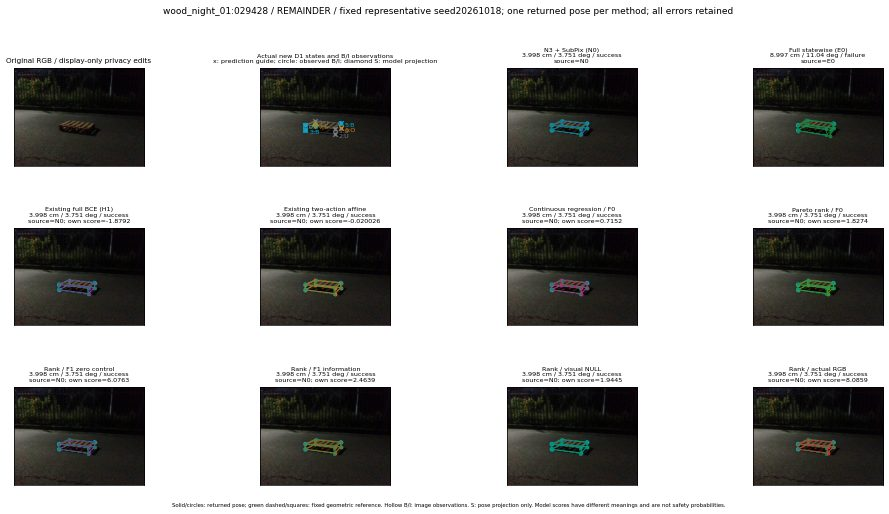

실선은 반환 자세, 초록 점선은 고정 기하 참조입니다. S는 영상 관측이 아닙니다. 점수는 모델별 의미가 다르며 보정된 안전 확률이 아닙니다. 개인정보 처리는 표시 사본에만 적용했습니다.
| 방법·seed | 위치 / 회전 / 공동성공 | 실제 출처 | 선택 후보 | 각 모델 자체 점수 |
|---|---|---|---|---|
| N0 | 3.998 cm / 3.751 deg / success | N0 | N/A | N/A |
| E0 | 8.997 cm / 11.04 deg / failure | E0 | N/A | N/A |
| E0_REGENERATED | 8.997 cm / 11.04 deg / failure | E0 | E0_REGENERATED | N/A |
| POSEFIX_SUBPIX_PF_ANCHOR | 7.271 cm / 1.306 deg / failure | OTHER | N/A | N/A |
| POSEFIX_SUBPIX_YOLO_ANCHOR | 7.271 cm / 1.306 deg / failure | OTHER | N/A | N/A |
| D1_H1_MLP_s20261018 | 3.998 cm / 3.751 deg / success | N0 | N0 | -1.8791728019714355 |
| D1_H1_MLP_s20261019 | 3.998 cm / 3.751 deg / success | N0 | N0 | -2.016502618789673 |
| D1_H1_MLP_s20261020 | 3.998 cm / 3.751 deg / success | N0 | N0 | -1.6693711280822754 |
| D1_H1_PAIR_MLP_s20261018 | 3.998 cm / 3.751 deg / success | N0 | N0 | -0.7356442213058472 |
| D1_H1_PAIR_MLP_s20261019 | 3.998 cm / 3.751 deg / success | N0 | N0 | -0.8589801788330078 |
| D1_H1_PAIR_MLP_s20261020 | 3.998 cm / 3.751 deg / success | N0 | N0 | -0.33340373635292053 |
| D1_H1_PAIR_ROLE_AFFINE_s20261018 | 3.998 cm / 3.751 deg / success | N0 | N0 | -0.020026151090860367 |
| D1_H1_PAIR_ROLE_AFFINE_s20261019 | 3.998 cm / 3.751 deg / success | N0 | N0 | -0.1580265462398529 |
| D1_H1_PAIR_ROLE_AFFINE_s20261020 | 3.998 cm / 3.751 deg / success | N0 | N0 | 0.013108436018228531 |
| R_CONT_F0_s20261018 | 3.998 cm / 3.751 deg / success | N0 | N0 | 0.7152020335197449 |
| R_CONT_F0_s20261019 | 3.998 cm / 3.751 deg / success | N0 | N0 | 0.7716575860977173 |
| R_CONT_F0_s20261020 | 3.998 cm / 3.751 deg / success | N0 | N0 | 0.7014086842536926 |
| R_ORDER_F0_s20261018 | 3.998 cm / 3.751 deg / success | N0 | N0 | 1.8274469375610352 |
| R_ORDER_F0_s20261019 | 3.998 cm / 3.751 deg / success | N0 | N0 | 1.5924932956695557 |
| R_ORDER_F0_s20261020 | 3.998 cm / 3.751 deg / success | N0 | N0 | -4.3531107902526855 |
| R_ORDER_F1_ZERO_s20261018 | 3.998 cm / 3.751 deg / success | N0 | N0 | 6.076292037963867 |
| R_ORDER_F1_ZERO_s20261019 | 3.998 cm / 3.751 deg / success | N0 | N0 | 8.275392532348633 |
| R_ORDER_F1_ZERO_s20261020 | 3.998 cm / 3.751 deg / success | N0 | N0 | 4.237238883972168 |
| R_ORDER_F1_s20261018 | 3.998 cm / 3.751 deg / success | N0 | N0 | 2.4639415740966797 |
| R_ORDER_F1_s20261019 | 3.998 cm / 3.751 deg / success | N0 | N0 | 4.629576206207275 |
| R_ORDER_F1_s20261020 | 3.998 cm / 3.751 deg / success | N0 | N0 | 6.349336624145508 |
| V_ORDER_NULL_s20261018 | 3.998 cm / 3.751 deg / success | N0 | N0 | 1.944542646408081 |
| V_ORDER_NULL_s20261019 | 3.998 cm / 3.751 deg / success | N0 | N0 | 1.7450159788131714 |
| V_ORDER_NULL_s20261020 | 3.998 cm / 3.751 deg / success | N0 | N0 | 3.9562833309173584 |
| V_ORDER_RGB_s20261018 | 3.998 cm / 3.751 deg / success | N0 | N0 | 8.085945129394531 |
| V_ORDER_RGB_s20261019 | 3.998 cm / 3.751 deg / success | N0 | N0 | 1.4411242008209229 |
| V_ORDER_RGB_s20261020 | 3.998 cm / 3.751 deg / success | N0 | N0 | -4.340234756469727 |